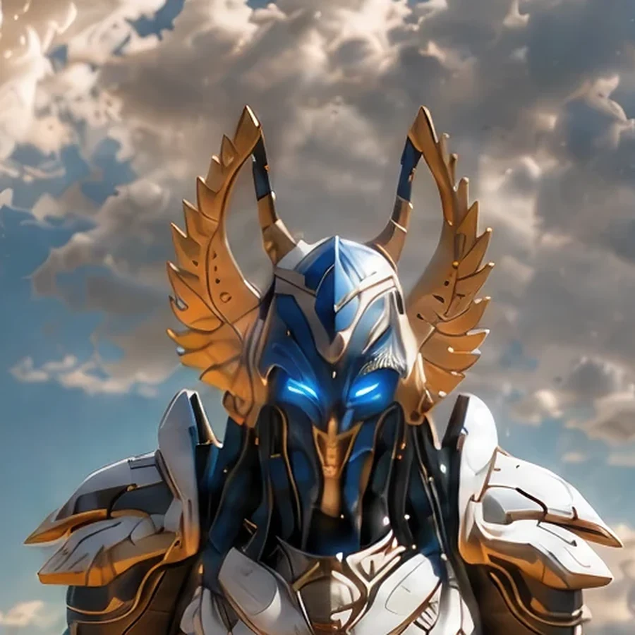

Field Observation
Tharven discovers a red wireframe cube glowing at the far-left edge of the desert. The projection reveals alien geometry active on Earth 1.
 ©
©
GENEZYS ARCHIVE · Legionnaire
Paradox Watcher
Identity & combat record
Archive node 01 / 04

Archive record
Tharven watches for paradoxes the way sailors watch for storms. The Chronal Snare bends the moments between frames and wears down every enemy at once. The Custodians say Tharven once saw the same Synthbot arrive twice. Tharven refuses to talk about it.
Combat signature
Bends equations between frames: Deals 20 pierce damage to all and reduces 10 cosmara to all for 2 rounds.
Genezys 07:05 ™&©2026LEGIONS
Field intelligence
Archive node 02 / 04
FIELD REPORT // ARTIFACT DISCOVERY
Field Observation
Tharven discovers a red wireframe cube glowing at the far-left edge of the desert. The projection reveals alien geometry active on Earth 1.
Environment
Object Analysis
Key Findings
Restricted visual records
Archive node 03 / 04

Motion archive
Archive node 04 / 04
Motion record not yet recovered